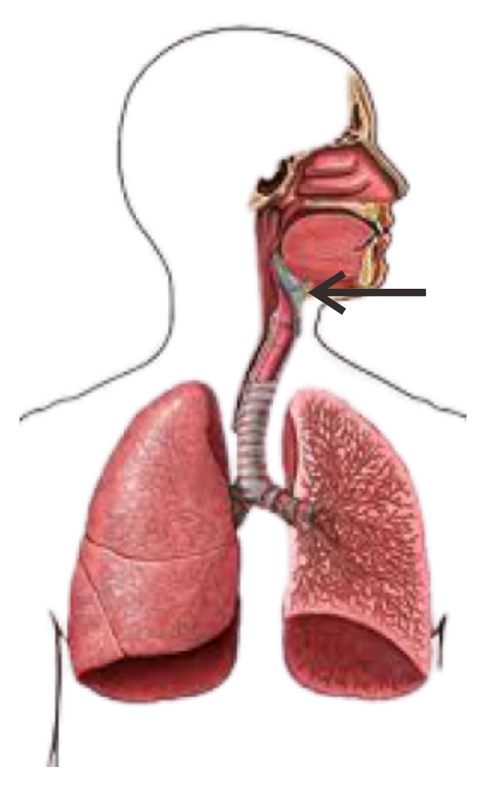
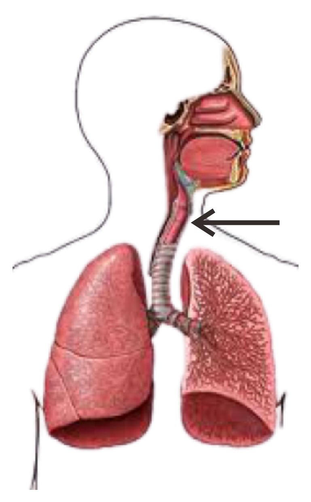
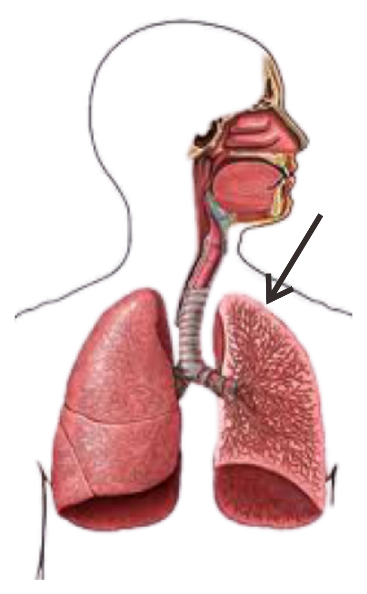

TEORITY
MEDIA AJAR INTERAKTIF
BERPETUALANG DI DALAM TUBUH MANUSIA

Organ Sistem Pernafasan ada 4, yaitu :
1. Hidung
2. Pangkal Tenggorokan (Laring)
3. Batang Tenggorokan (Trakea)
4. Paru-Paru (Pulmo)
Pada saat menghirup oksigen, hidung berfungsi sebagai jalur keluar masuk. Di dalam hidung terdapat rambut-rambut (silia) yang berfungsi untuk menyaring bakteri, virus, dan kuman yang masuk ke hidung saat bernafas. Selain itu juga terdapat lender (mucus) yang berfungsi untuk mengatur suhu dan kelembapan udara yang masuk ke hidung agar sesuai dengan kelembapan dan suhu tubuh. Udara yang telah disaring dan disesuaikan suhu serta kelembapannya kemudian diteruskan ke pangkal tenggorokan (Laring).
" style="width: 40px; height: 40px" onclick="myFunctionKu(this)"> PANGKAL TENGGOROKANPangkal tenggorokan terdiri atas katup pangkal tenggorokan (epiglotis) dan beberapa tulang rawan yang membentuk jakun. Jakun pria lebih besar dari pada wanita. Selain itu, pada pangkal tenggorokan terdapat pita suara yang akan bergetar saat dilewati gelombang suara. Getaran tersebut yang menimbulkan suara. Udara yang berasal dari hidung melewati laring akan diteruskan menuju batang tenggorokan (trakea).
" style="width: 40px; height: 40px" onclick="myFunctionKu(this)"> BATANG TENGGOROKANTrakea terletak di depan kerongkongan (esophagus). Saat kita sedang bernafas, maka katup akan turun dan menutup saluran pencernaan, sebaliknya saat menelan makanan katup akan membuka saluran pencernaan dan menutup saluran pernafasan. Trakea berfungsi sebagai saluran lewatnya udara. Pada pangkal trakea terdapat katup yang membuka dan menutup saluran pernafasan. Pada dinding trakea terdapat bulu-bulu halus. Bulu-bulu halus tersebut yang berfungsi untuk melontarkan kembali debu dan kotoran.
" style="width: 40px; height: 40px" onclick="myFunctionKu(this)"> PARU-PARUParu-paru terletak di rongga dada. Rongga dada dan perut dibatasi oleh sekat yang disebut diafragma. Paru-paru terdiri atas paru-paru kanan dan paru-paru kiri. Paru-paru kanan memiliki tiga gelambir (lobus) dan paru-paru kiri memiliki dua gelambir (lobus). Di dalam paru-paru terdapat gelembung-gelembung yang disebut alveolus. Gelembung ini berfungsi untuk menangkap udara bersih dan melepaskan udara kotor. Udara tersebut kemudian diteruskan menuju alveolus, disinilah terjadi pertukaran gas Oksigen dengan Karbon dioksida secara difusi.Paru-paru dibungkus oleh selaput yang dinamakan pleura. Pleura berfungsi sebagai pelumas sehingga memungkin paru-paru mengembang dan mengempis saat bernafas.
" style="width: 40px; height: 40px" onclick="myFunctionKu(this)">
 Home
Home Game
Game Quiz
Quiz Tentang Kami
Tentang Kami